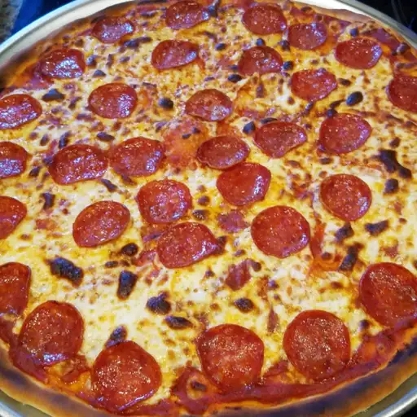

Homemade Pepperoni Pizza

Description
This pepperoni pizza recipe produces a quick and easy classic! Delicious homemade pizza crust and tomato sauce have never been easier.
Ingredients
Quick Pizza Sauce
- ½ cup water
- ½ can tomato paste
- 1 teaspoon dried oregano, crushed
- 1 teaspoon dried basil, crushed
- ½ teaspoon garlic powder
- ½ teaspoon onion powder
- ½ teaspoon sugar
- ½ teaspoon salt
- ¼ teaspoon black pepper
Easy Pizza Crust
- 3 ¼ cups all-purpose flour, or more as needed
- 2 envelopes of yeast
- 1 tablespoon sugar
- 1 ½ teaspoons salt
- 1 ⅓ cups very warm water (50 to 55ºC)
- ⅓ cup oil
Toppings
- 1 cup shredded mozzarella cheese, or more to taste
- 170g pepperoni
Steps
- Preheat the oven to 220ºC. Grease two 30cm pizza pans;
- Make sauce: Whisk together water, tomato paste, oregano, basil, garlic powder, onion powder, sugar, salt, and pepper in a medium bowl until smooth. Set aside.
- Make crust: Combine 2 cups flour, yeast, sugar, and salt in a large bowl. Add warm water and oil; mix until well blended, about 1 minute. Gradually add remaining flour, a little at a time, until a soft, sticky dough forms.
- Transfer dough to a floured surface; knead until dough is smooth and elastic, about 4 minutes. Add more flour as needed. (If using RapidRise yeast, let dough rest, covered, for 10 minutes.)
- Divide dough in half. Lightly flour your hands, then pat each piece of dough onto the prepared pizza pans.
- Top dough with sauce, cheese, and pepperoni.
- Bake in the preheated oven until crusts are browned and cheese is bubbly, 18 to 20 minutes. Rotate pizza pans between the top and bottom oven racks halfway through baking.